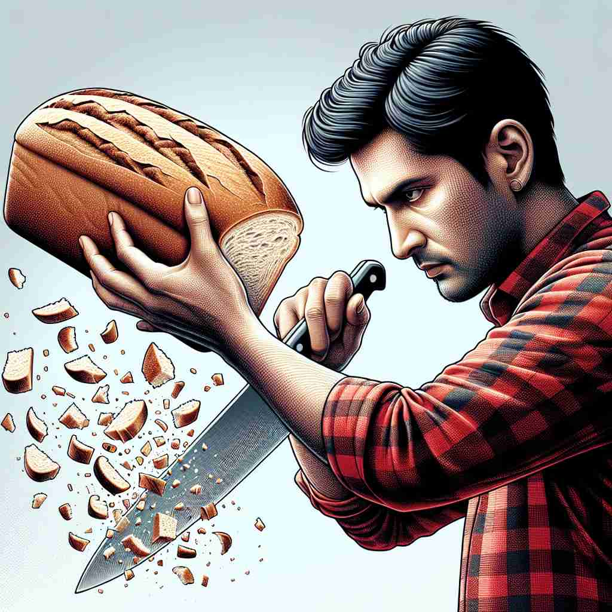

💬 The chef needs to cut the vegetables for the salad.

💬 She loves to cut out a design from the paper.
💬 The barber will cut hair to make it look neat.

💬 He wants to cut the bread into slices.
🔈 [kʌt]
🗝️ v. to divide or separate something using a sharp tool
🖼️ 在一个厨房里，厨师熟练地用锋利的刀切开新鲜的面包。他的每一次挥刀都恰到好处，将面包均匀地切成了一片片。这个场景展现了'cut'作为用锋利工具分割某物的含义。
🔍 想象用锋利的工具"切割"（cut）某物的动作。这个核心动作可以延伸到减少、停止、穿过、忽视等含义。无论是实际的切割，还是比喻意义上的"切断"或"切除"，都源自这个基本动作。通过联想"切割"的画面，你可以更容易理解和记忆'cut'的各种用法。
💬 The chef needs to cut the vegetables for the salad.
💬 She loves to cut out a design from the paper.
💬 The barber will cut hair to make it look neat.
💬 He wants to cut the bread into slices.
🌳 基本词 'cut' 是一个古英语词，没有明显的词根、前缀或后缀结构，通常单独使用，表示 '切割、减少' 等。
💡 记忆 'cut' 时，可以联想到剪刀（scissors）的动作，帮助记住其与 '剪切、分开' 有关的涵义。
🗝️ v. to reduce or decrease
🖼️ 在一个公司会议室里，经理宣布由于预算限制，今年的开支将要削减。他的决策是为了维持公司的财务健康。这个场景展示了'cut'作为减少或降低的含义。
💬 The company decided to cut costs by 10%.
❓ 从整体中"切掉"一部分
🗝️ v. to stop suddenly
🖼️ 在一场电影放映中，突然电力故障，屏幕上的画面瞬间消失，观众们愣了一下。这突然的停止就是'cut'作为突然中断的体现。
💬 The power cut out during the storm.
❓ 像被切断一样突然停止
🗝️ v. to make a way through or across
🖼️ 在一片密林中，探险队用砍刀开路，慢慢地穿过浓密的植被。每一刀都在厚密的丛林中开辟出一条小路，展示了'cut'作为开辟道路的含义。
💬 The river cuts through the valley.
❓ 像切开一样穿过某物
🗝️ v. to ignore or avoid someone
🖼️ 在学校的走廊里，一个学生与他的朋友迎面走来，他假装没看见，径直走了过去。这种故意避开的行为诠释了'cut'作为忽视或回避某人的含义。
💬 She cut me completely after our argument.
❓ 像切断关系一样不理会某人
🗝️ v. to edit or shorten a film, text, etc.
🖼️ 在电影剪辑室里，编辑专注地在电脑前剪辑片段，他删减掉冗长无趣的部分，确保影片节奏更紧凑。'cut'在这里表现为编辑或缩短影片的意思。
💬 The director cut several scenes from the movie.
❓ 从整体中"切掉"不需要的部分
🗝️ n. a reduction
🖼️ 在超市的打折促销活动中，顾客注意到商品上新贴的标签，上面显示价格有大幅'cut'。这里'cut'代表了价格的削减。
💬 The government announced tax cuts for small businesses.
❓ 源自"切掉"的动作
🗝️ n. a wound or incision made by cutting
🖼️ 在急诊室中，一个孩子因为跌倒而手指被划伤，医生正在小心地为他包扎伤口。此处的'cut'指的是由切割造成的伤口。
💬 He got a deep cut on his hand while chopping vegetables.
❓ 切割动作的结果